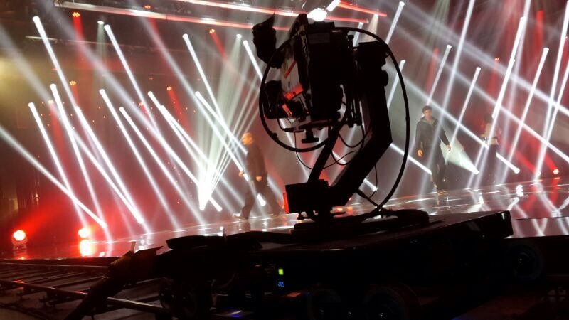

1 / 3Dollies
AutoDolly
The Auto Dolly is an automatic track camera system which integrates movement, lifting, pan-tilt control, lens control and other versatile functions.
It can accommodate any desired Remote head with a tolerance of up to 40KG and can meet the installation and use of various types of broadcast cameras and cine style cameras and Lens. The Auto Dolly is suitable for studio production, live broadcast and various applications.. With the Auto Dolly's smart user program, one person can easily control and fulfill camera raising, lowering, pan and tilt, shifting, focus & zoom of the camera.
The system can be set as automatic or manual control with the capability of being programmed for numerous presets,positions and can be preset to run Speed and autopilot.
Configuration and function
The Auto Dolly is a collaboration between dolly, pedestal, gyroscope remote head movement that runs smooth while controlling the direction precisely. The lifting column is designed with a three-stage synchronous lifting mechanism capable of lifting heavy loads making the movement of the column smooth with low noise.


Request the AutoDolly
Check dates and availability.
Tell us your shoot dates and location. We'll confirm availability and what comes with the system, usually the same day.
CAT · 5 Margarita & Pefkon Street
Athens, Greece